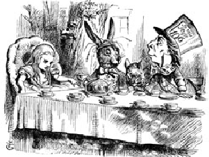

Материал из Википедии — свободной энциклопедии

Первая публикация «Алисы» состоялась 4 июля 1865 года, ровно через три года после того, как Его Преподобие Чарльз Лютвидж Доджсон и Его Преподобие Робинсон Дакворт на лодке поднялись вверх по Темзе в обществе трёх девочек.
Алиса бежит за Белым Кроликом и внезапно проваливается в глубокую кроличью нору, которая выводит её в загадочную комнату с множеством закрытых дверей.
Ввиду разнообразности вариантов перевода каждого имени персонажа ниже представлена таблица с указанием различных переводов.
| Демурова | Оригинал | Набоков | Заходер | Щербаков | Яхнин |
|---|---|---|---|---|---|
| Алиса | Alice | Аня | Алиса | Алиса | Алиса |
| Болванщик | Hatter | Шляпник | Шляпа | Шляпочник | Котелок |
Большая часть критических отзывов на книгу положительны, хотя иногда критикуют (но чаще хвалят) странный непредсказуемый сюжет.
В Великобритании первые отзывы на книгу были весьма критичны: за редкими исключениями рецензенты отказывались видеть хоть какой-то смысл в «блужданиях» Алисы. Отношение критики изменилось лишь спустя несколько десятилетий.
В 1931 «Алиса» попала в список запрещенных книг в китайской провинции Хунань, поскольку «животные не должны говорить человеческим голосом» и «нельзя показывать животных и людей равными».
Отзыв из журнала «Женское образование»:
Есть книги, о которых и десяти слов сказать не хочется, до того они ниже всякой критики. Лежащее перед нами издание принадлежит именно к их числу. Бессодержательнее и нелепее этой сказки или, вернее, просто небывальщины (так как в создании сказки предполагается участие фантазии) трудно себе что-нибудь представить. Советуем всем матерям пройти мимо этого никуда не годного измышления, не приостанавливаясь ни на минуту.